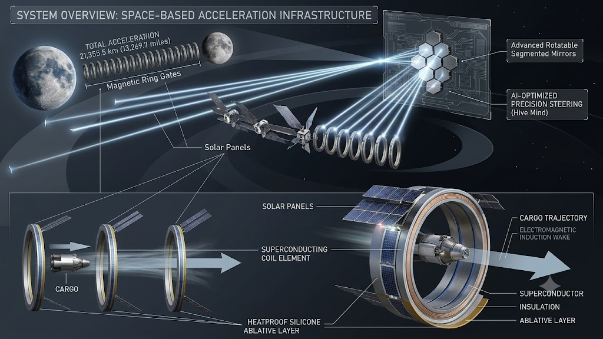

Orbital Electromagnetic Acceleration Corridor (OEAC)

Abstract
The ISRU Centrifugal Orbital Node (ICON) is a conceptual design for a small,
permanently crewed station in Lunar orbit. Combining a zero-g main hull for docking,
logistics, refueling ports and workspace that functions with a rotating centrifuge pod
that provides artificial gravity for crew habitation. The station is designed around a
Near Rectilinear Halo Orbit (NRHO) for long term stability, in-situ resource utilization
(ISRU) of Lunar polar ice for propellant, and consumables, and a centrifuge
geometry chosen to keep rotational effects within established human comfort factor
limits. This document presents the station concept, its major subsystems and the full
set of governing engineering calculations used to size them.
1. ICON
ICON is conceived as a small-crew (4-6 people) outpost in Lunar orbit. Serving as a
staging point for lunar surface operations, extraterrestrial missions, a research
platform for long duration partial-isolation human factors, and a technology
demonstrator for ISRU-derived propellant and life support consumables.
2. Artificial Gravity. Centrifuge Design
The centrifuge pod is sized to provide 1g of artificial gravity at deck level while
keeping rotation within the range that is generally considered tolerable for a trained
crew.
3. Structural Design — Spoke / Tether
The spoke connects the zero-g main hull to the rotating centrifuge pod and
carries the full centripetal tensile load of the pod. It is sized in tension using a
carbon-fiber composite (CFRP), selected for its high strength-to-weight ratio
relative to metals.
4. Orbital Mechanics
ICON is placed in a Near Rectilinear Halo Orbit (NRHO), the same orbit
selected for NASA's Lunar Gateway. NRHO’s avoid the rapid decay that
happens in low circular lunar orbits while requiring only a small annual
stationkeeping propellant budget.
5. Power Systems
Electrical power is provided by deployable solar arrays sized for continuous station load, with
battery storage sized to cover the maximum expected eclipse duration per orbit.
6. Thermal Control
Waste heat from electronics, life support, and crew metabolism is sent out into space via
deployable radiator panels sized using the Stefan-Boltzmann law.
7. Radiation Shielding
Crew quarters use water as primary shielding mass. Hydrogen rich materials blocksgalactic
cosmic rays (GCR) more effectively per kilogram than metals, and water doubles as a stored
consumable.
8. Propulsion and ISRU
Stationkeeping propellant is derived from electrolyzed water ice mined at the lunar poles
(ISRU), consistent with the station's namesake. Propellant mass is sized using the
Tsiolkovsky rocket equation against the orbital stationkeeping Δv budget.
9. Life Support and Consumables
Resupply mass is calculated per crew rotation, accounting for ISS-realistic environmental
control and life support system (ECLSS) recycling rates. Food cannot be recycled and is
supplied in full.
10. Summary of Key Results
In the document attached below.
11. Assumptions, Open Items, and Future Work
In the document attached below.
12. Conclusion
The ICON concept demonstrates that a 50 m radius, 4.23 RPM centrifugal station in a lunar
NRHO is physically and structurally feasible using current materials and propulsion
technology. Rotational comfort metrics, structural margins, power and thermal budgets,
radiation shielding requirements, and consumables logistics all land within established or
reasonably projected engineering limits. The next design phase should focus on detailed
subsystem mass closure, dynamic structural analysis of the spin-up sequence, and
integration of the ISRU propellant and water production chain with the station's resupply
logistics chain.
This PDF file contains the full, current in-depth information about ICON.
Download PDF